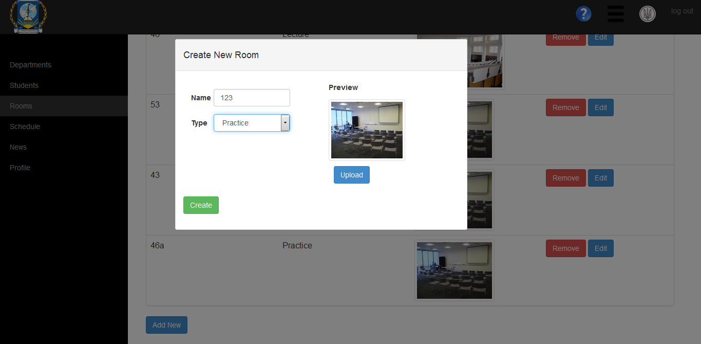
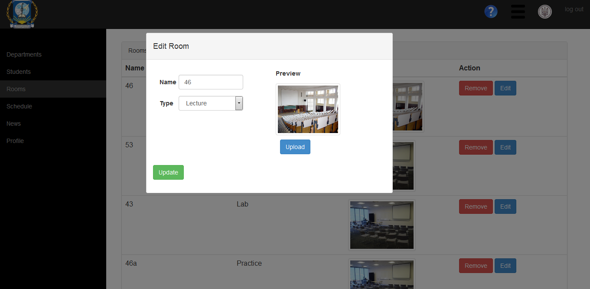

Сторінка аудиторного фонду.
На цій сторінці можна додати/видалити/відредагувати інформацію про аудиторії.
Щоб додати нову аудиторію натисніть синю кнопку Add New. У відкритій формі введіть назву аудиторії і оберіть її тип, також можете завантажити фотографію аудиторії й натисніть зелену кнопку Create.

Щоб редагувати інформацію про аудиторію натисніть кнопку Update навпроти необхідної аудиторії. У відкритій формі відредагуйте необхідну інформацію й натисніть зелену кнопку Update.

Щоб видалити інформацію про аудиторію натисніть червону кнопку Remove навпроти необхідної аудиторії.
Created with the Personal Edition of HelpNDoc: Create iPhone web-based documentation